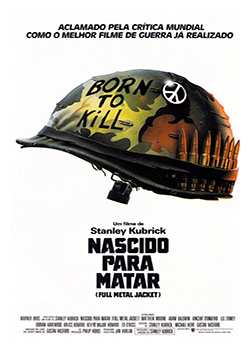
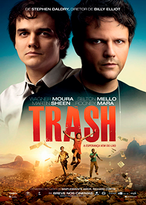
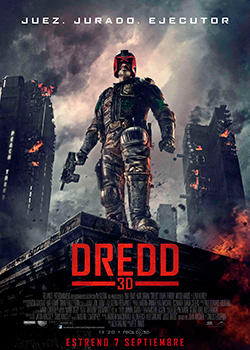
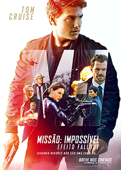
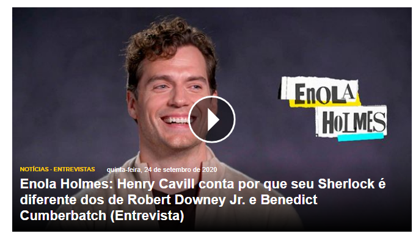
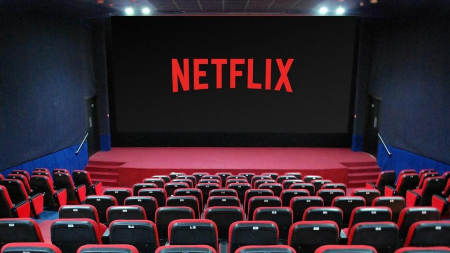
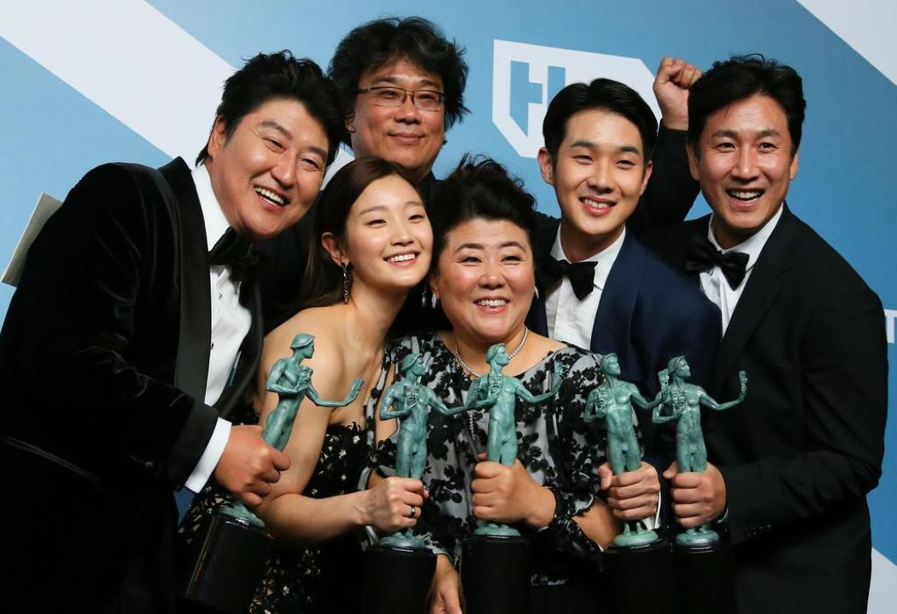

Lançamentos
Em destaque




Últimas Avaliações
Sara Gesinberg
Avaliação: Assisti recentemente "As Horas", perfeito, sem palavras!
15/09
Tiago Amaral
Avaliação: Os Vingadores: O Ultimato teve um hype gigantesco que acabou decepcionando por muita expectativa, minha opinião.
15/09
Ju Mendonça
Avaliação: O que foi esse Capitã Marvel? Fui ver um filme de heróis e acabei vendo uma exaltação de ideologia constante e chata.
15/09
Entrevistas & Making of

Diretor: Dexter Fletcher
Roteiro: Chris Brancato Estreia: 2021
Filme: Sherlock Holmes 3
Diretor: Dexter FletcherRoteiro: Chris Brancato Estreia: 2021
Filme:The Half of It
Diretor: Alice WuRoteiro: Alice Wu Estreia: 2020
Filme: Sergio
Diretor: Greg BarkerRoteiro: Craig Borten Estreia: 2020
Novidades

